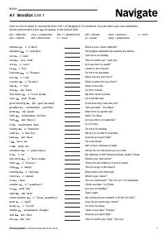

NANavigate A1 kursi uchun asosiy ingliz tili so'zlari ro'yxati.
Ushbu qo'llanma Navigate A1 kursi talabalari uchun mo'ljallangan bo'lib, darslikning har bir bo'limidagi muhim so'zlar ro'yxati va ularning izohlarini o'z ichiga oladi. Undagi so'zlar Oxford 3000 lug'atiga asoslangan bo'lib, boshlang'ich darajadagi o'quvchilarga lug'at boyligini oshirishga yordam beradi. Material ingliz tilini o'rganuvchilar uchun qulay so'z boyligi bazasi sifatida xizmat qiladi.